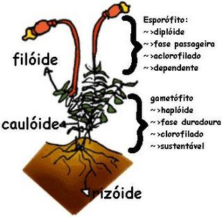
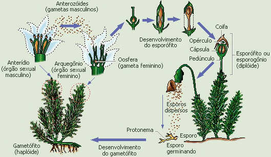

Briófitas!
Compreende vegetais terrestres com morfologia bastante simples, conhecidos popularmente como "musgos" ou "hepáticas".
São organismos eucariontes, pluricelulares, onde apenas os elementos reprodutivos são unicelulares, enquadrando-se no Reino Plantae, como todos os demais grupos de plantas terrestres.
Características:
- Avasculares
- Não possuem vasos condutores de seiva.
- Transporte de água
- Ocorre lentamente por osmose.
- Plantas muito simples
- Não têm flores, vasos condutores, sementes ou frutos
- Ocorrência
- Vivem em ambientes úmidos
Organização Corporal
A fase da vida mais desenvolvida é o gametófito que apresenta rizóide, caulóide e filóide. O gametófito brota a partir de esporos liberados pelo esporófito e normalmente tem sexos separados. Já o esporófito cresce a partir do embrião que se encontra dentro de uma parte da planta chamada de Arquegônio, contém filamentos que sugam nutrientes do gametófito, uma seta a qual segura uma cápsula produtora de esporos por meiose e um calíptra que conserva o tecido 'n' do arquegônio e envolve a cápsula.
Reprodução
O ciclo haplodiplobionte nos musgos
Nos musgos e em todas as briófitas, a metagênese envolve a alternância de duas gerações diferentes na forma e no tamanho. Os gametófitos, verdes, são de sexos separados e duram mais que os esporófitos.
Existem órgãos especializados na produção de gametas chamados gametângios e que ficam localizados no ápice dos gametófitos. O gametângio masculino é o anterídio e seus gametas, os anterozoides. O gametângio feminino é o arquegônio que produz apenas um gameta feminino, a oosfera.
Para ocorrer o encontro dos gametas é preciso, inicialmente, que os anterozoides saiam dos anterídios. Gotículas de água do ambiente que caem nos anterídios libertam os gametas masculinos. Deslocando-se na água, os anterozoides entram no arquegônio e apenas um deles fecunda a oosfera. Forma-se o zigoto que, dividindo-se inúmeras vezes, origina o embrião. Este, no interior do arquegônio, cresce e forma o esporófito.
O jovem esporófito, no seu crescimento, rompe o arquegônio e carrega em sua ponta dilatada um pedaço rompido do arquegônio, em forma de "boné", conhecido como caliptra. Já como adulto, o esporófito, apoiado no gametófito feminino, é formado por uma haste e, na ponta, uma cápsula (que é um esporângio) dilatada, dotada de uma tampa, coberta pela caliptra.
o esporângio células 2n sofrem meiose e originam esporos haploides. Para serem liberados, é preciso inicialmente que a caliptra seque e caia. A seguir, cai a tampa do esporângio. Em tempo seco e, preferencialmente, com vento os esporos são liberados e dispersam-se. Caindo em locais úmidos, cada esporo germina e origina um filamento semelhante a uma alga, o protonema. Do protonema, brotam alguns musgos, todos idênticos geneticamente e do mesmo sexo. Outro protonema, formado a partir de outro esporo, originará gametófitos do outro sexo e, assim, completa-se o ciclo. Note que a determinação do sexo ocorre, então, já na formação dos esporos.